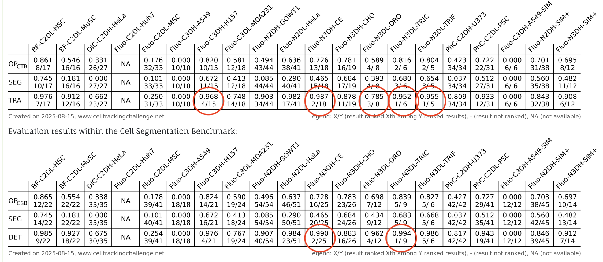
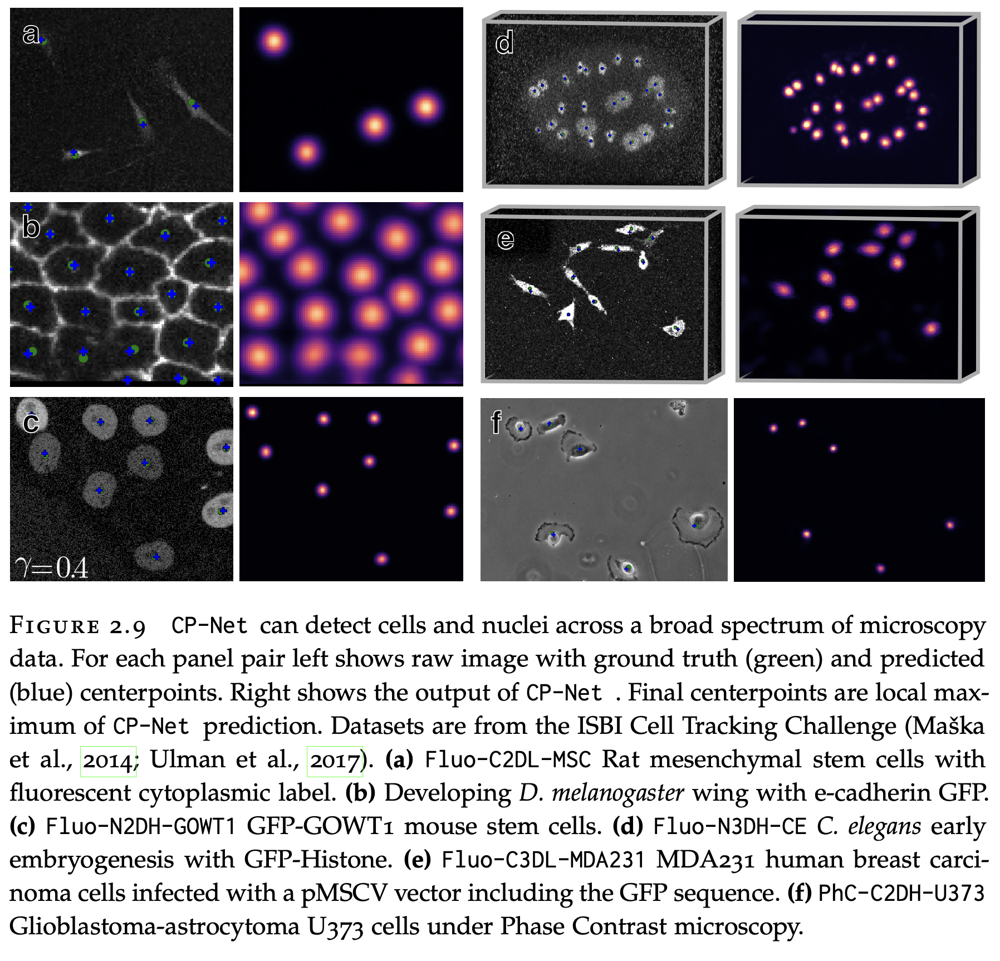
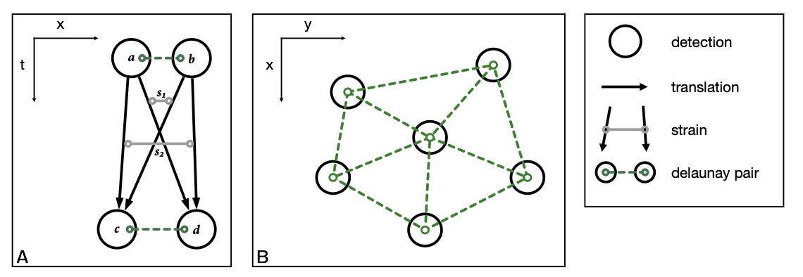
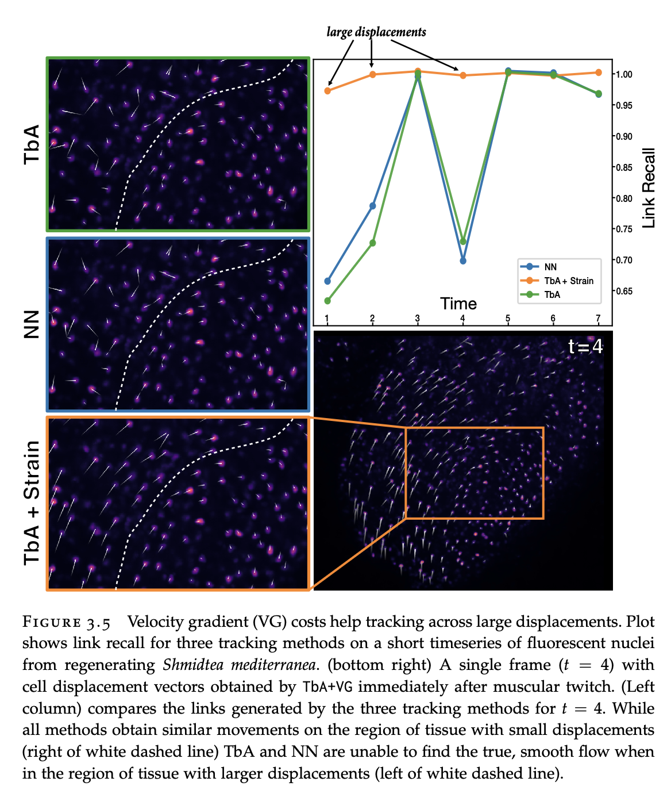
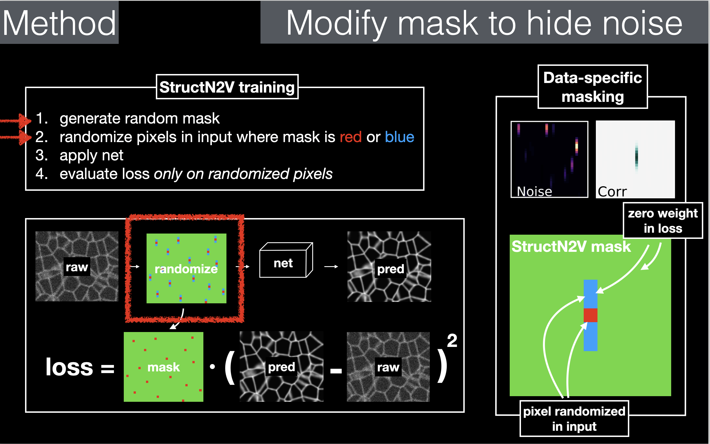
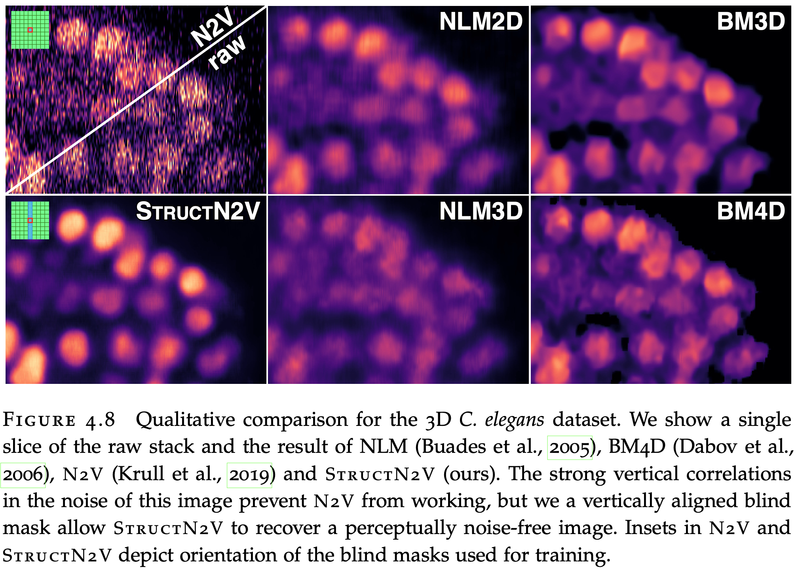
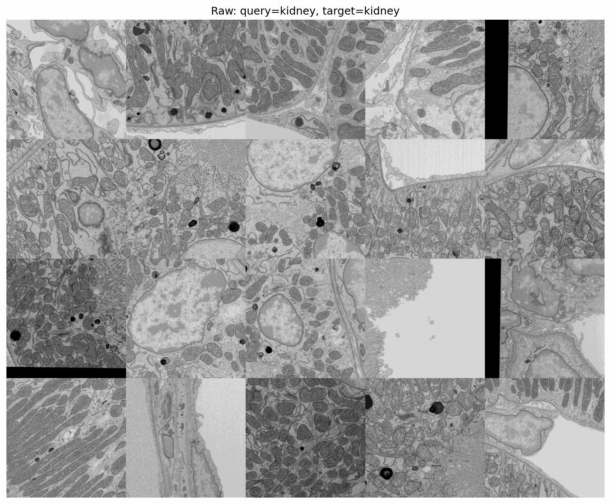
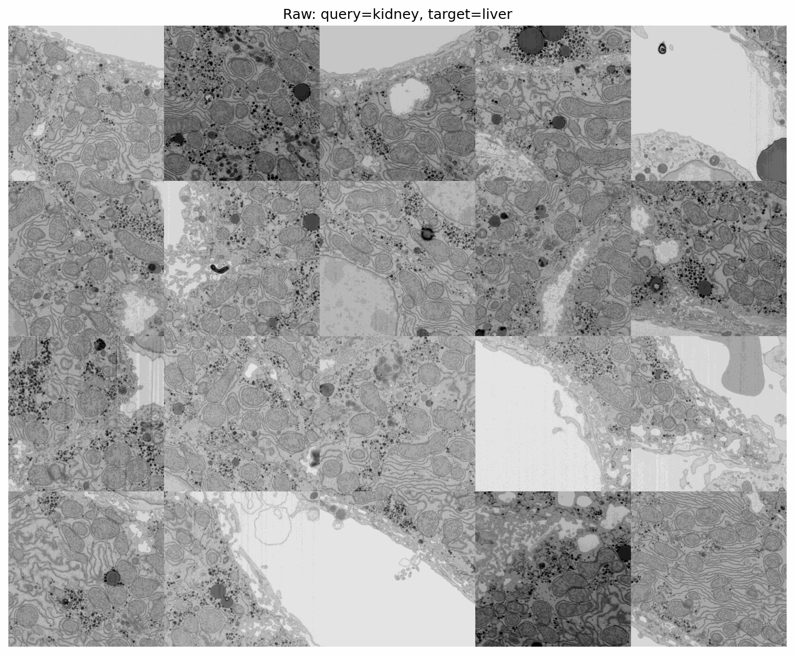

Microscopy Image Analysis
with DINOv3
Embedding-Based Mitochondria Retrieval
on OpenOrganelle EM Data
Coleman Broaddus
About Me
- PhD with Gene Myers Lab, Dresden — DL for bioimage analysis
- Background in self-supervised learning — believe it's the path forward for bioimage analysis
CARE & StarDist
- CARE — Content-Aware Image Restoration: supervised denoising with matched noisy/clean training pairs
- StarDist — star-convex polygon detection for densely packed cell nuclei
- Both widely adopted in the bioimage community
- Worked across modalities: phase contrast, histopathology, 3D+T SPIM, multi-view reconstruction
Cell Tracking Challenge
- CNN detection + fast heuristic tracking
- Only method to attempt every single dataset in the challenge
- Still 1st on some problems


Velocity Gradient Tracking
- Track cells through large tissue deformations
- Use Delaunay triangulation to estimate local velocity gradients (strain)
- Robust to large displacements where nearest-neighbor fails


StructN2V
- Structured Noise2Void — self-supervised denoising for spatially correlated noise
- Standard N2V assumes independent noise — fails on structured artifacts
- StructN2V uses a structured blind spot mask matching the noise correlation
- No clean training data required


Antithesis
- Software Testing Research: Deterministic simulation testing, fuzzing, property-based testing
- Distributed systems testing
- RL-guided exploration with intrinsic motivation and curiosity
- Worked closely with founder Dave Scherer (FoundationDB creator) on applying RL to fuzzing
- Fuzzing is agent exploring an unknown environment. RL guided with Curiosity/Novelty.
Interest in Neuroscience
- Read Max Bennett's A Brief History of Intelligence — twice this year
- Listened to Adam Marblestone on Dwarkesh Patel — brain-inspired AI, connectomics, and the future of neuroscience tooling
- Fascinated by how brains encode rewards for high-level, novel signals
- Want to work at the intersection of ML and neuroscience at scale
Live Code Walkthrough
Job 1: Code Review
Making research code collaborative
What Works Well
- Clean three-class structure: Model / Dataset / Trainer
- Correct PyTorch patterns:
train()/eval(),no_grad() - Best-model checkpointing
- Training-stats normalization of test data
Key Issues
- Test data used as validation — leaks info into model selection
- No reproducibility — no random seeds anywhere
- All hyperparameters hardcoded — can't run ablations without editing source
- Hardcoded output paths — experiments overwrite each other
Proposed Restructuring
- Config object (dataclass/YAML/TOML) for all parameters
- Unique output directory per experiment run
- Proper train/val/test split with seeded shuffling
- Incremental logging — separate from visualization
- Model hyperparameters as constructor arguments
Job 2: DINOv3 for Mitochondria
Three tasks on OpenOrganelle EM data
Task 1: Data Acquisition
- Programmatic download from OpenOrganelle via zarr/S3
- Two datasets: jrc_mus-liver and jrc_mus-kidney
- 20 random 1024×1024 crops at full resolution (s0)
- Cached to disk, reproducible via seed
def task1(cfg, n_samples=20, crop_size=1024):
for dname, info in datasets.items():
zs = np.random.randint(0, shape[0], size=n_samples)
ys = np.random.randint(0, shape[1] - crop_size, size=n_samples)
xs = np.random.randint(0, shape[2] - crop_size, size=n_samples)
for i, (z, y, x) in enumerate(zip(zs, ys, xs)):
slc = (int(z), slice(y, y+crop_size), slice(x, x+crop_size))
img = load_remote(info['ds'], info['subpath'], slc, fmt='zarr')
Task 1: Navigating OpenOrganelle
- N5 vs zarr axis conventions:
(z,y,x)vs(x,y,z) - Neuroglancer coordinates are in physical space (nm), not voxels
- Multi-resolution pyramid: s0 (full) through s4+
- Built caching + bounds clamping + mirror padding into loader
Task 2: Feature Extraction
Dense embeddings with DINOv3
Patch Size Selection
- DINOv3 ViT uses 16×16 patches
- At s0, mitochondria are ~20px wide — similar scale to patch size
- Captures texture but not full geometry
- Solution: downsample images so mitos span multiple patches
Dense Embeddings via Translated Passes
- Native ViT stride = 16 → coarse grid
- Run model at multiple (dy, dx) offsets
- Interleave results into a dense grid
- stride=4 → 16 passes, stride=2 → 64 passes
for dy in range(0, 16, dense_stride):
for dx in range(0, 16, dense_stride):
x_shift = x[:, dy:, dx:]
# crop to patch-aligned, run model
# stitch tokens back to output grid
accum[gi, gj] += tokens[pi, pj]
counts[gi, gj] += 1
accum /= countsWhy Not Hack the Stride?
- Setting
model.patch_embed.proj.stride = (4,4)produces overlapping patches in one pass - But creates high-frequency artifacts — the conv wasn't trained for overlap
- Translated passes give smoother, more consistent results
- Each pass sees the image as the model expects: non-overlapping 16×16 patches
Positional Encoding Challenges
- DINOv3 uses RoPE (Rotary Position Embeddings)
- Bakes position into Q/K at every attention layer
- Creates a spatial gradient in embeddings (red→blue across image)
- Especially strong in SAT-trained models
Solutions tried:
- Subtract embeddings of a constant (blank) image — removes average bias
- Subtract the spatial mean of each image's embeddings — removes a constant offset but not the spatial pattern
- Subtract the per-pixel mean across all images + augmentations — content averages out, positional pattern remains and gets removed
Task 2: PCA Visualization
RGB = first 3 PCA components of dense DINO embeddings
Liver

Kidney

Task 2: Raw vs PCA
Liver

Kidney

Task 3: Embedding-Based Retrieval
Can we find mitochondria using a single query?
Retrieval Approach
- Select mito centerpoints as query locations
- Extract query embedding at each point
- Compute cosine similarity against all target embeddings
- Average similarity maps across multiple queries
for qemb in query_embs:
sim_accum += (tokens_normed @ qemb.T).squeeze(-1).numpy()
sim_accum /= len(query_embs)Within-Dataset Retrieval
Kidney → Kidney

Liver → Liver
Cross-Dataset Retrieval
Kidney → Liver

Liver → Kidney
Multiple Queries
- Average similarity maps across queries — not embeddings
- Each query contributes equally regardless of embedding magnitude
- More queries → smoother, more robust signal
- Could extend to: max-similarity, weighted average, or learned combination
Task 4: Improving Detection
Proposal for minimal fine-tuning
Proposed Approach
- LoRA on frozen DINO backbone — few trainable parameters
- EM data is fundamentally different from natural images — shallow features may need adaptation too
- Linear probing with existing ground truth labels
- Consider satellite-pretrained models as better domain match
- Per-dataset normalization statistics matter significantly
Lessons Learned
- Input normalization is critical — per-dataset zero-mean/unit-variance
- RoPE positional encoding is a persistent challenge for dense prediction
- Empirical positional baseline (averaged across augmented dataset) works well
- Translated passes > stride hacking for dense ViT inference
- ConvNeXt produces smooth features natively but at 32× downsampling
Engineering Approach
- TOML config with deep-merge overrides
- Headless execution — saves PNGs/GIFs, no GUI dependency
- Remote execution via rsync + SSH
- Auto-detect GPU, auto-select model
- Cached dataset stats, cached positional baselines
- Single script:
python main.py -c config.toml
Thank You
Questions?
Code: main.py • Config: config.toml • Notes: notes.md